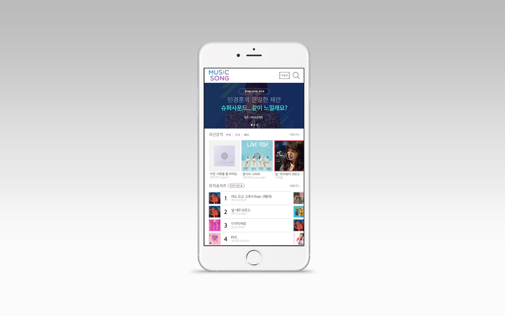
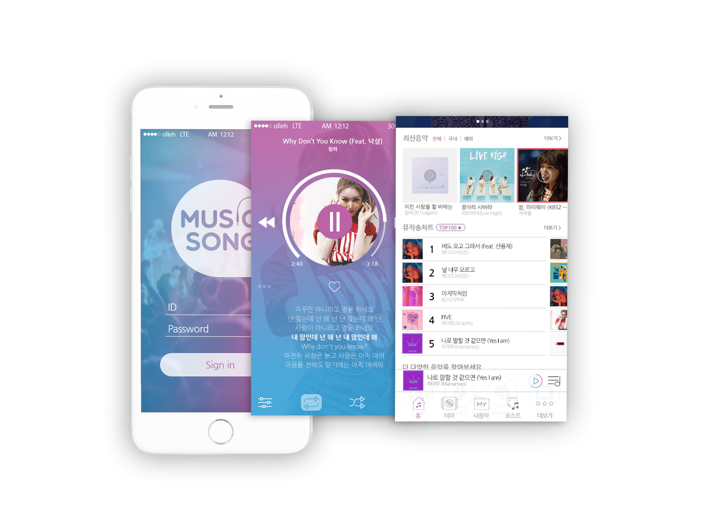

MUSICSONG
OVERVIEW
뮤직송APP은 고객의 이용과 편리함을 최대한으로 고려하여 제작하였다. 뮤직송의 로고는 음악이 모두에게 흡수된다는 의미에 아이디를 얻어 두 가지 컬러가 조화롭게 섞이는 모습으로 메인 컬러 콘셉트를 잡고,
I에는 이어폰을 꼽는 단자 모양으로 단순한 디자인 가운데 재미를 더하여 주었다.
첫 페이지는 깔끔함과 뮤직송 로고의 메인컬러와 심플함의 조화가 잘 어울리게 디자인하였고, 뮤직앱의 이용권을 상단에 배치해 고객들의 이동시간을 고려하여 디자인하였다. 하단에는 현재 재생중인 곡의 정보를 알려주었다. 노래재생은 수직모양의 바 보다는 메인앨범 이미지를 시디로 표현하였고 그 주변에 노래 재생정도를 알 수 있게 하여 시디가 재생되고 있는 시각적 재미를 주었다.
노래를 들을 때 좋아요(하트)클릭하여 그때그때 좋았던 노래들을 소장할 수 있도록 편리함을 주었다. 가사는 2문장 정도 짧게 보여주기 보단 전체적인 가사를 볼 수 있도록 타 뮤직앱보다 5문장을 더 추가하였다. 배경에는 메인컬러를 깔아줌으로써 통일감을 주었다.
- TYPE.
- UI/UX App Design
- CLIENT.
- 할리스커피
- Individual work.
- 2017.07~2017.07 (1 Day)
- URL.
- 메인페이지, 로그인페이지, 재생페이지
- 작업내역
- Photoshop, Illustrator


